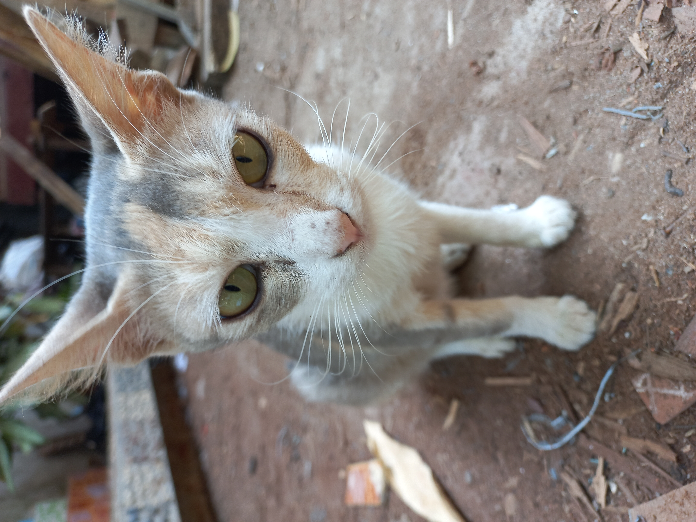
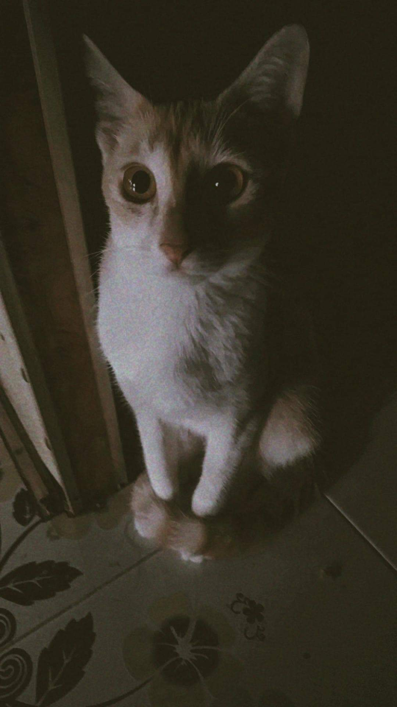
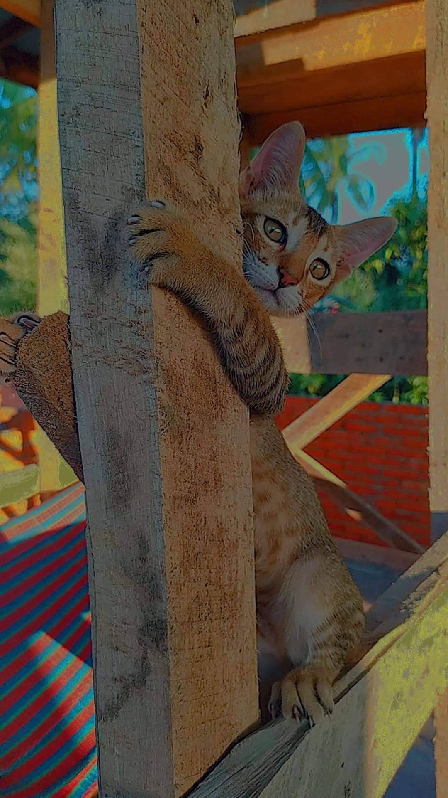
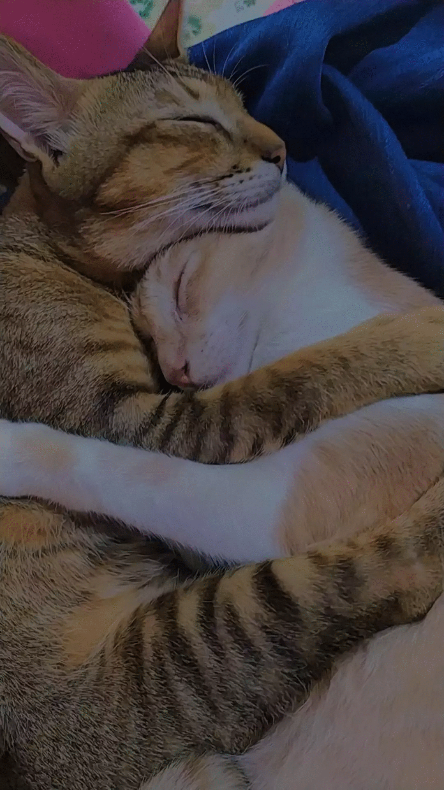
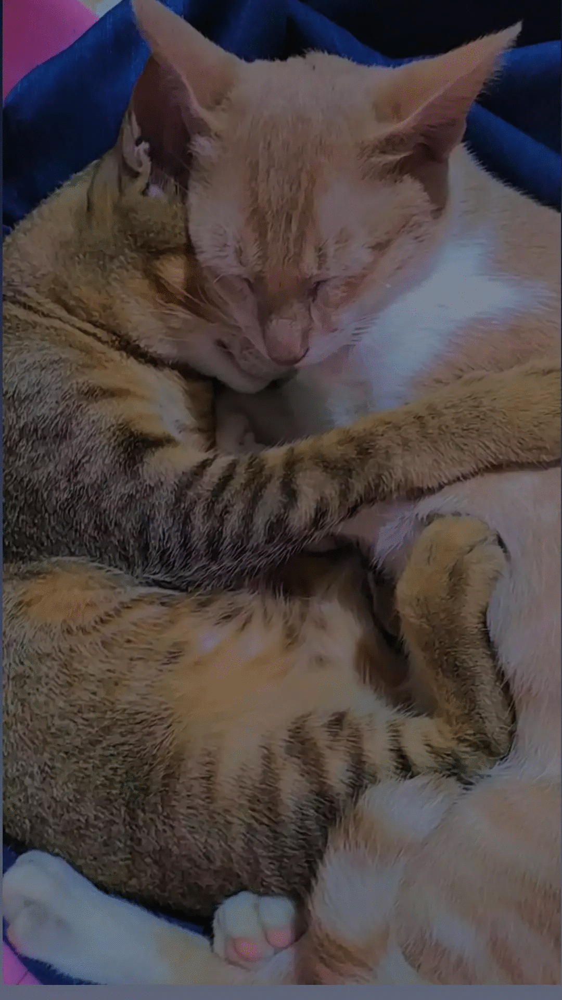
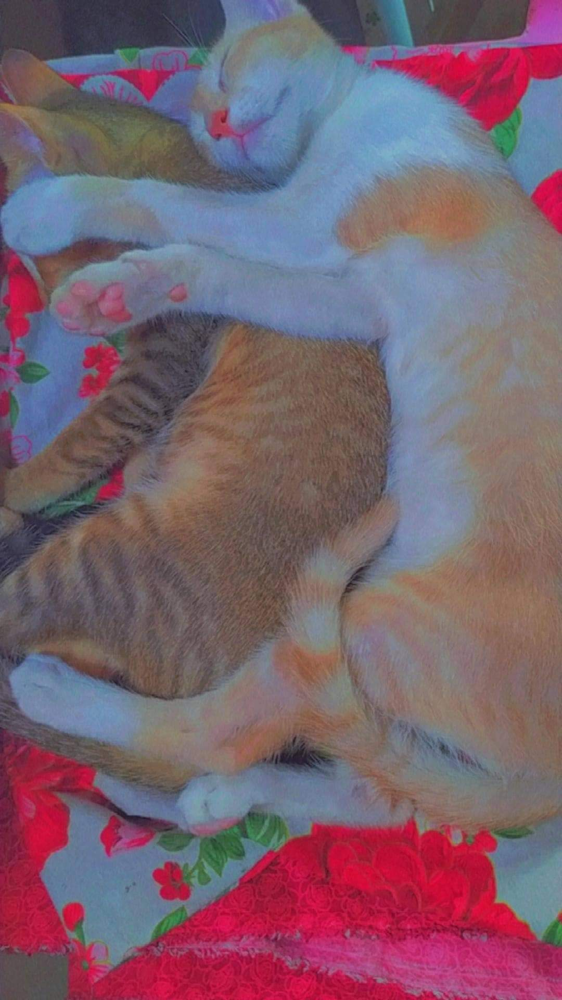
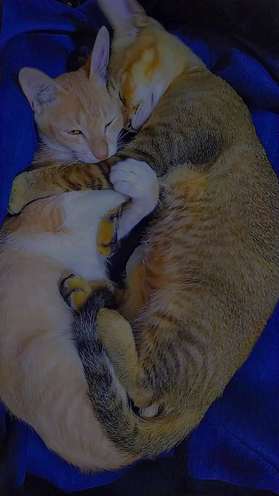

ကြောင်လေးတွေရဲ့ လှုပ်ရှားမှုကိုတင်ဆက်ဖို့ NDA Cats Things မှ ရွေးချယ်ထားတဲ့အိမ်သို့ ရောက်ရှိပြီး ကြောင်လေးတွေရဲ့အမူအရာတွေကို တင်ဆက်ပေးမှာဖြစ်ပါတယ်ရှင်
ပထမဦးဆုံး ကြောင်ကလေးနာမည်တွေပရိတ်သတ်ကြီးအား မိတ်ဆက်ပေးပါရစေရှင် ပထမဦးစွာမြင်ရမဲ့ပုံလေးက "ကြောင်မေကြီး" လို့ခေါ်တဲ့ သားနှစ်ယောက်မိခင်ပဲဖြစ်ပါတယ်ရှင်
ပိုင်ရှင်ပြောကြားချက်အရ "ကြောင်မေကြီးမှာအလွန်ချေသောကြောင်ဖြစ်ပါတယ် သူမသည်အချီမခံပါ ပိန်ပိန်လေးနဲ့မျက်လုံးမှာအစိမ်းရောင်ရှိပြီး အလွန်ချေပါသည်"
ဆက်လက်ပြီးတော့ မြင်တွေ့ရမဲ့ပုံကတော့ ကြောင်မေကြီးရဲ့ အကြီးဆုံးသား "ရွှေဝါ" ဖြစ်ပါတယ်ရှင်
"ရွှေဝါလေးက ပေါတောတောနဲ့ချစ်ဖို့ကောင်းတယ် ထမင်းမစားပဲကြောင်စာပဲစားတယ် လိမ္မာတယ်" လို့ပိုင်ရှင်ဖြစ်သူကဆိုပါတယ်
"ရွှေညို" လို့အမည်ရတဲ့အငယ်ဆုံးကြောင်နဲ့မိတ်ဆက်ပေးပါရစေရှင်
"ပုံထဲကအတိုင်းပဲ ပေတေတေဆိုးတဲ့ကလေးအရွယ်ရောက်လာတော့ ရှူးပန်းတတ်နေပြီ ထမင်းစားတယ် ခုတော့မိန်းမလိုချင်နေပြီ" လို့ပိုင်ရှင်ဖြစ်သူကဆိုပါတယ်
ပရိတ်သတ်ကြီးတို့ ရွှေညိုနဲ့ရွှေဝါလေးတို့ရဲ့ ချစ်ခင်နေကြပုံကိုရှုစားကြရအောင်👇
   